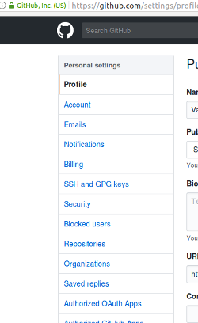
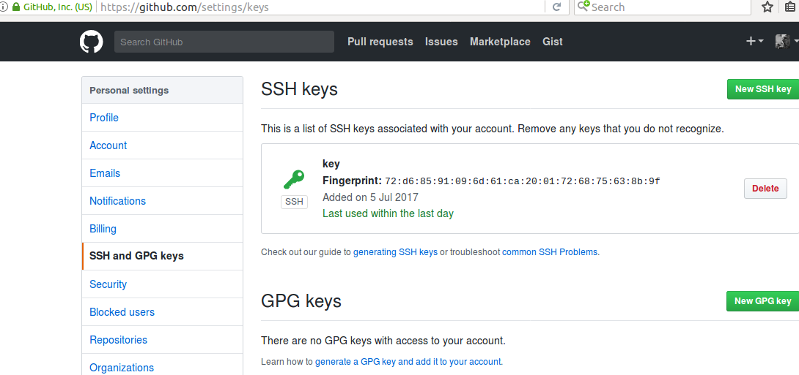

Как создать репозиторий на github, работа с github на LINUX
GitHub — всемирно известный сервис, предоставляющий хостинг для IT проектов, также заявляет о себе как социальной сети для разработчиков.
В статье рассмотрено как создать репозиторий на github, подключиться к нему с локального компьютера и работать с проектом. Используется Ubuntu — с github можно работать также с любой другой Unix машины или Windows.
Установка git и создание локального репозитория
Работаем от имени пользователя root. Прежде всего устанавливаем git
apt-get install git
Заходим на https://github.com и создаем пользовательский аккаунт, также создаем в графическом интерфейсе первый репозиторий (называем его test)
В консоли Ubuntu задаем имя пользователя, работающего с git и его адрес электронной почты.
git config --global user.name "valdes101"
git config --global user.email "valdes101@example.com"
Создаем локальный каталог, который будет служить репозитоирем
mkdir testrepo
переходим в каталог
cd testrepo/
Инициализируем репозиторий
git init
Initialized empty Git repository in /home/admin/IT/python/py/.git/
После выполнения команды в каталоге появляется директория .git, в которой размещаются файлы. необходимые для корректной работы пакета
Как создать репозиторий на github и подключиться к нему
После адреса сайта указываем имя пользователя, затем — через / — название репозитория, .git
git remote add origin https://github.com/valdes101/test.git
Далее пробуем передать дынные из локального репозитория в удаленный
git push -u origin master
При этом возникает ошибка:
Permission denied (publickey).
fatal: Could not read from remote repository.
Please make sure you have the correct access rights
and the repository exists.
Из ее текста следует, что не добавлен SSH ключ и подключение к удаленному репозиторию невозможно.
Сгенерируем ключ и добавим его в личном кабинете на github
ssh-keygen -t rsa -b 4096 -C "valdes101@example.com"
Generating public/private rsa key pair.
Enter file in which to save the key (/root/.ssh/id_rsa):
Вводим путь к ключу на сервере
Enter passphrase (empty for no passphrase):
Парольная фраза и ее повтор
Enter same passphrase again:
Your identification has been saved in /root/.ssh/id_rsa.
Your public key has been saved in /root/.ssh/id_rsa.pub.
The key fingerprint is:
72:d6:85:91:09:6d:61:ca:20:01:72:68:75:63:8b:9f valdes101@example.com
The key's randomart image is:
+—[RSA 4096]—-+
|..+oo=. .o++ |
|.+ +.oo o=o |
|. . . o.. . |
| . . . . |
| E. S . |
| + |
| |
| |
| |
+——————+
Вывод аналогичный приведенному выше будет означать, что ключ сгенерирован
Добавляем его в .ssh/id_rsa
ssh-add ~/.ssh/id_rsa
Identity added: /root/.ssh/id_rsa (rsa w/o comment)
cat ~/.ssh/id_rsa.pub
Копируем ключ, начинающийся с ssh-rsa и вставляем его в соответствующее поле в личном кабинете на github
�
Выбираем «SSH and GPG keys»
�
Далее New SSH key (на скриншоте ключ уже добавлен)
После этого вновь пробует отправить данные
git push -u origin master
Counting objects: 3, done.
Writing objects: 100% (3/3), 216 bytes | 0 bytes/s, done.
Total 3 (delta 0), reused 0 (delta 0)
To git@github.com:valdes101/testrepo.git
* [new branch] master -> master
Branch master set up to track remote branch master from origin.
Все получилось — данные были успешно переданы в удаленный репозиторий.
Проверяем, создаем файл и добавляем в него произвольный текст (в данном случае добавлен «some text»)
mcedit FILE.txt
Добавляем измененный файл
git add FILE.txt
Файлы можно добавлять по одному, можно добавлять все сразу — команду можно выполнить вслед за предыдущей она ее продублирует
git add .
Делаем коммит, указывая после ключа -m комментарий
git commit -m 'First commit'
Передаем данные
git push origin master
Здесь система попросит ввести логин пользователя на github и его пароль
Username for 'https://github.com': valdes101
Password for 'https://valdes101@github.com':
Как только мы это сделаем отображаются следующая информация:
Counting objects: 3, done.
Writing objects: 100% (3/3), 215 bytes | 0 bytes/s, done.
Total 3 (delta 0), reused 0 (delta 0)
To https://github.com/valdes101/test.git
* [new branch] master -> master
Теперь меняем содержимое единственного файла в репозитории — добавляем еще одну строку
Затем вновь:
git add .
git commit -m 'Second commit'
[master c5b2de5] First commit
1 file changed, 2 insertions(+), 1 deletion(-)
и снова передаем информацию на github
git push origin master
Username for 'https://github.com': valdes101
Password for 'https://valdes101@github.com':
Counting objects: 3, done.
Writing objects: 100% (3/3), 253 bytes | 0 bytes/s, done.
Total 3 (delta 0), reused 0 (delta 0)
To https://github.com/valdes101/test.git
1273b8c..c5b2de5 master -> master
В интерфейсе аккаунта на сайте можно видеть добавленный файл, коммиты и комментарии
При невыполнении предложенного порядка действий будут возникать ошибки, информация корректно передаваться не будет.
Если не добавить
git add .
перед коммитом можно увидеть следующее сообщение, выделенное в консоли красным цветом:
git commit -m 'Third commit'
On branch master
Changes not staged for commit:
modified: FILE.txt
no changes added to commit
Все системные сообщения очень информативны — в частности, при попытке «пушнуть» на github неизмененные файлы возникает сообщение «Everything up-to-date»
git push origin master
Username for 'https://github.com': valdes101
Password for 'https://valdes101@github.com':
Everything up-to-date
Создаем файл password и добавляем в него произвольное содержимое
mcedit password
Делаем коммит
git commit -m "added one more file"
[master c2a671f] added one more file
2 files changed, 2 insertions(+), 1 deletion(-)
create mode 100644 password
Отправляем информацию на удаленный репозиторий
git push origin master
Username for 'https://github.com': valdes101
Password for 'https://valdes101@github.com':
Counting objects: 4, done.
Delta compression using up to 4 threads.
Compressing objects: 100% (2/2), done.
Writing objects: 100% (4/4), 318 bytes | 0 bytes/s, done.
Total 4 (delta 0), reused 0 (delta 0)
To https://github.com/valdes101/test.git
c5b2de5..c2a671f master -> master
Отмена коммитов с отменой изменений, внесенных в файлы, и без них
Рассмотрим возможность отмены сделанных коммитов до момента передачи данных на github. Меняем содержимое файла убирая, для примера, один символ
Затем, вновь:
git add .
git commit -m "new one"less password
[master dded43f] new one
1 file changed, 1 insertion(+), 1 deletion(-)
Отменяем последний коммит следующей командой
git reset --soft HEAD^
Просматриваем файл и убеждаемся в том, что изменения в нем сохранились несмотря на отмену коммита
less password
Делаем коммит снова
git add .
git commit -m "new one"
Сейчас отменяем его с ключом —hard, его использование означает, что будет отменен коммит и изменения, внесенные в файл
git reset --hard HEAD^
HEAD is now at c2a671f added one more file
Отправляем данные на github
git pull origin master
remote: Counting objects: 3, done.
remote: Compressing objects: 100% (2/2), done.
remote: Total 3 (delta 0), reused 3 (delta 0), pack-reused 0
Unpacking objects: 100% (3/3), done.
From https://github.com/valdes101/test
* branch master -> FETCH_HEAD
c2a671f..d578a72 master -> origin/master
Updating c2a671f..d578a72
Fast-forward
password | 3 ++-
Клонирование репозитория с Github
Идем на другую машину (в тестовой среде был просто сменен пользователь командой su mailer, затем выполнен переход в его домашний каталог cd /home/mailer)
git clone https://github.com/valdes101/test.git
Cloning into 'test'…
remote: Counting objects: 10, done.
remote: Compressing objects: 100% (4/4), done.
remote: Total 10 (delta 0), reused 10 (delta 0), pack-reused 0
Unpacking objects: 100% (10/10), done.
Checking connectivity… done.
Переходим в каталог test
cd test/
Редактируем файл password
mcedit password
git add .
Представляемся системе
git config --global user.email "testuser2017@mail.ru"
git config --global user.name "testuser2017"
Делаем коммит
git commit -m "added by another user"
git commit -m «added by another user»[master d578a72] added by another user
1 file changed, 2 insertions(+), 1 deletion(-)
Отправляем на github
git push origin master
Username for 'https://github.com': valdes101
Password for 'https://valdes101@github.com':
Counting objects: 3, done.
Delta compression using up to 4 threads.
Compressing objects: 100% (2/2), done.
Writing objects: 100% (3/3), 293 bytes | 0 bytes/s, done.
Total 3 (delta 0), reused 0 (delta 0)
To https://github.com/valdes101/test.git
c2a671f..d578a72 master -> master
Проверяем, что на github появилась информация о сделанном коммите, а файл обновился
Теперь авторизуемся на сервере с реквизитами пользователя от имени которого работа велась изначально и выполняем команду git pull origin master
git pull origin master
remote: Counting objects: 3, done.
remote: Compressing objects: 100% (2/2), done.
remote: Total 3 (delta 0), reused 3 (delta 0), pack-reused 0
Unpacking objects: 100% (3/3), done.
From https://github.com/valdes101/test
* branch master -> FETCH_HEAD
c2a671f..d578a72 master -> origin/master
Updating c2a671f..d578a72
Fast-forward
password | 3 ++-
1 file changed, 2 insertions(+), 1 deletion(-)
Просматриваем файл password — видим, что изменения сделанные и закоммиченные другим пользователем сохранились